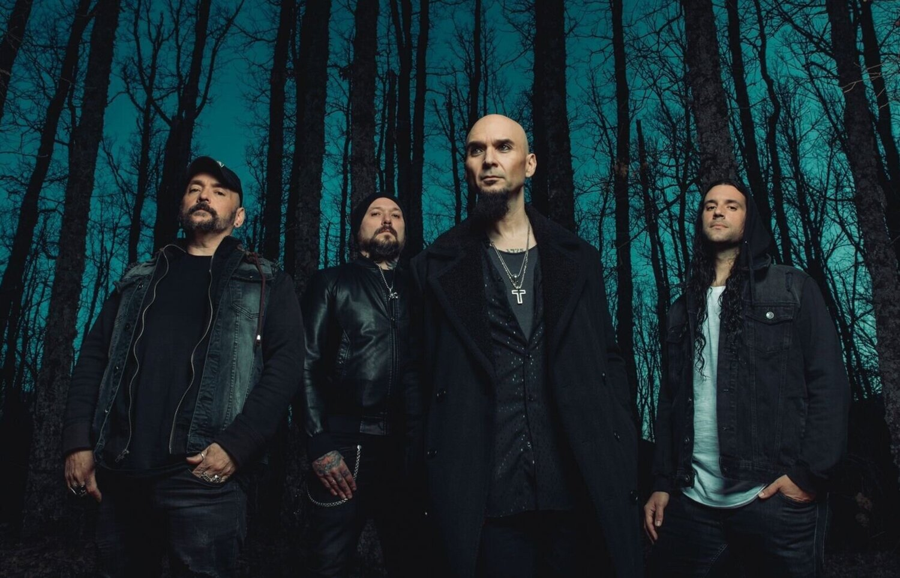

Sôber
Sôber es una banda madrileña formada a principios de 1993. Sôber significa sobrio, y la sobriedad es una de las características más notables del grupo, combinando la potencia musical con la melodía vocal, además de su característica y original puesta en escena. Fundada por Carlos Escobedo (voz y bajo) y Antonio Bernardini (guitarras), con Elias Romero a la batería a los que se sumó Jorge Escobedo (guitarras) unos meses más tarde, siendo esta la formación original de los entonces conocidos como Sôber Stoned.
Desde mi percepción es una banda que lo tiene todo, pero que a pesar de ello es poco reconocida. por lo cual hoy les vengo a presentar esta banda, sus integrantes y algunas canciones y videos, que a mi parecer son bastante buenos, y que, si eres como yo te pondrán a menear la cabeza y sacar tus mejores posiciones tocando la guitarra de aire. Así que sin más preámbulos aquí los dejo con una pequeña muestra de delo que es sôber y con un pequeño link que los llevara a la pagina oficial por si desean conocer mas de ellos.